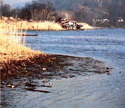
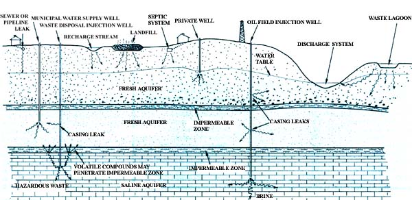
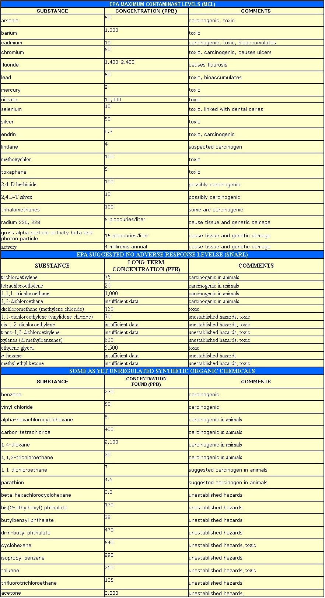

Without dangerous chemicals in our water supplies ... life itself might continue to be
possible.
As William Ashworth so aptly put it in his book Nor Any Drop to Drink (see MOTHER NO. 79, page 190 for an excerpt from that volume), "We are not destroying our water; but we are rendering it unusable, which amounts to the same thing." And clearly, one of the greatest threats to our ability to assure ongoing and adequate supplies of clean water is the increasing presence of toxic elements and compounds in those precious resources.
In order to understand the scope of the problem, it's necessary to realize that the General Accounting Office (GAO) has stated that 43% of community water systems in the U.S. violated safe drinking standards in 1981. Now many of those problems no doubt were biological in nature, but at least as many likely involved a toxic metal or chemical. Worse yet, of the 146,000 recorded violations, only 16,000 were properly reported to the public (as is required by law). And lest country folk feel too secure with their private wells, Cornell University reported last year that approximately 39,000,000 rural citizens are drinking unsafe water. And, of that sample, 17% reportedly were exposed to dangerous concentrations of the extremely toxic heavy metals lead and cadmium.
Of course, many people are aware of the well-publicized water quality problems that have cropped up in some parts of New Jersey and were created by leaks from hazardous waste dumps. But the lack of publicity given to other contaminated wells hides the fact that water pollution is playing no regional favorites. From the 39 wells closed in the San Gabriel Valley in California because levels of trichloroethylene (TCE, a carcinogen and toxicant) reached 600 parts per billion (PPB) ... to nitrate contamination from fertilizer runoff and feedlot leaks in Nebraska ... to a well in Pennsylvania that was actually measured at 27,300 PPB of trichloroethylene, water pollution is a national (indeed, a worldwide) problem.
In general, potable water is extracted either from surface supplies (lakes and rivers) or from ground water (which lies below the earth's surface and either rises by hydrostatic pressure - as in artesian wells - or must be pumped out). These two sources interact in sometimes complicated ways: Ground water, for instance, may help to fill lakes and rivers ... or the lakes and rivers may slowly recharge ground-water supplies. The mapping of such exchanges is probably best left to trained hydrologists, but there are a few important basic differences that you should understand.
Water in streams takes about two weeks (on the average) to make its journey from the headwaters to the ocean, while lakes hold a portion of their rainfall somewhat longer ... but ground water may be in place for thousands of years, and generally moves at an annual pace of less than ten feet. For that reason, contaminants can remain present at high concentrations long after entering ground water.
Yet another important characteristic of ground water is that this liquid is actually contained within rock and/or sediments, and therefore receives considerable filtration. (The image of underground rivers is accurate only in the loosest sense ... cavities filled with water actually are quite rare.) This filtration effectively eliminates biological hazards, but it's far less successful at stopping toxic chemicals. In fact, some particularly volatile synthetic organic substances (trichloroethylene is one of these) may move even more rapidly through ground water than does the H20 itself. There is also some concern that layers of subterranean sediment which are, for all practical purposes, impermeable to such substances as oil and salt may be far more permeable to this new breed of pollutant. Thus clay layers that had previously been considered adequate for "insulating" drinking-water aquifers from those used to house disposed-of waste (yes, toxic substances of all sorts are actually pumped underground in efforts to "get rid" of them) may already be proving inadequate to confine the volatile organic chemicals.
If you hope to become involved in analyzing the effects of a specific source of contamination, you must understand your local hydrology. You'll need to know, for example, whether surface water-which might contain pollutantsis passing into the ground water (a process known as aquifer recharge), running off to streams that may be recharge sources, or simply contaminating adjoining surface water. The relationship of water movement to your drinking source will be crucial to your ability to determine whether harmful chemicals are contaminating the water coming out of your tap.
PRIVATE WASTE DISPOSAL SYSTEMS: Septic tanks with drainage fields can release pollutants that may reach your drinking supply. A well should never be located closer than 100 feet to a leach field, and 200 feet would be much safer. It's also commonly recommended that the waste field be lower than the well site. Though this rule does have some merit, it certainly provides no guarantee of safety ... since water tables often rise to match geography, and pickup points for deep wells are, of course, far below the surface. An especially serious threat can be posed by a septic tank and drainage field that has been cleaned with trichloroethylene (the toxic carcinogen mentioned early in this article). TCE will do a fine job of removing grease from the concrete chamber, but if it isn't all removed, the volatile chemical will move quickly through the soil and into the water table.
WASTE TREATMENT PLANTS: As we've already suggested, the "cleaned" output from most municipal sewage plants is something less than potable. And during times of heavy rain, many of these facilities are forced to bypass raw sewage because of inadequate storm sewers. This foul outflow may be picked up by a water supply plant for treatment (which may or may not remove any offending compounds), or it may recharge the ground-water supplies.
STORAGE LAGOONS. Those who have to dispose of nasty, hard-to-treat materials (and are not too sure how to do so) often choose to dig a hole and fill it with the liquefied product. Common contents for such lagoons include the brine that's a by-product of petroleum production (in theory, this sodium-laden liquid is supposed to evaporate ... which it may do to some extent in very dry climates) and various toxic chemicals and elements (which typically fall to the bottom of settling ponds). Of the 76,000 impoundment sites pinpointed by the EPA (as of 1982), 70% had no lining to prevent the migration of the substances held in the "dumps" to ground water.
LANDFILLS: Many of the most serious well contamination incidents have been result of legal (or illegal) dumping of to wastes into "sanitary" landfills. But you may be surprised to know that even properly controlled facilities accept materials that can be hazardous if they're allowed to leach into ground water. In fact, it's been estimated that about half of the landfills in the U.S. contain dangerous amounts of hazardous wastes. (Used crankcase oil - which often has high concentrations of lead, cadmium, etc. - is one commonly found substance.)
AGRICULTURE: Excessive use of nitrogen fertilizer, as well as of pesticides and herbicides, can result in large quantities of these substances running off in heavy rains. The contamination of surface water is immediate, and studies indicate that much of this waste is beginning to find its way into ground water, too. Also, in and areas where irrigation is extensive, the problems appear to be growing particularly severe. (Large feedlots are another recognized source of pollution, since so much nitrogen is deposited on the ground by the packed-together livestock in such facilities.)
INJECTION WELLS. As we already mentioned, wells are sometimes used to dispose of wastes. The majority of these are found in oil fields, where brine is often injected into formations from which oil is being removed. (This is also a method of recovering a greater quantity of petroleum from a rock bed.) Problems with injection wells usually result from leaks either in the well casings themselves or between aquifers at points where the casings pass through impermeable layers. (Since oil deposits are generally found at considerable distances below the surface these days, direct contamination is seldom a problem.)
SEAWATER ENCROACHMENT. When ground water is removed faster than it can be naturally replaced in coastal areas, salt water sometimes enters the water table. This problem has already occurred at many sites along the Atlantic coast I and is likely to become more common in other areas.
PIPELINES AND STORAGE TANKS. Deteriorated or damaged gas and oil supply lines, and leaky storage tanks, can result in the entrance of large quantities of petroleum products into ground water. (Some of the most notorious cases have involved old, rusted-out tanks at filling stations.)
HIGHWAY SALT: Storage piles for the salt that is used to melt ice in northern states have been cited, as sources of the excessive sodium found in some private wells. Furthermore, the use of such salt on the highways is a widespread, though less concentrated, cause of water contamination.
MINING: Surface and ground-water supplies can become contaminated through mining activities. Stories of the acidification of streams in Appalachia are now legion, and underground mining has caused some serious ground-water pollution.
The traditional tests for water safety include measuring bacteria (such as the familiar coliform indicator) ... and sometimes hardness, total suspended solids, and nitrates. Most of the people we've talked with have found that their local health inspectors are unable to go beyond such rudimentary tests ... and when you find out what it costs to check for just the most common toxic elements and chemicals, you'll understand why. For example, to have samples examined for just the 16 substances included in the EPA's Interim Safe Drinking Water Standards costs at least $500, and testing for basic volatile organic chemicals runs a minimum of several hundred dollars more.
As you can see, then, it's not too practical to have your drinking supply examined for every potential contaminant. Instead, the best approach is probably to attempt to determine what could be polluting your water (the sources listed above are likely worth checking out). At that point, if you have reason to believe that a particular contaminant could be present, you might be able to persuade your neighbors that it would be worthwhile to chip in toward a $50-$200 test for that single substance.
Methods are available for removing many pollutants from drinking water, but the technology used must be suited to the specific problem you're trying to solve. Aeration, granulated activated carbon (GAC), and reverse osmosis (see MOTHER NOS. 61, 62, and 63 for detailed information on home-scale water treatment) are all techniques currently recognized by the EPA to be effective against some of the chemicals listed under the Interim Regulations and the Suggested No Adverse Response Levels (see the accompanying chart). In many cases, however, there is no generally accepted treatment method (that frequently mentioned chemical trichloroethylene is an example of a substance that can't presently be removed).
There's little doubt that a properly used, highquality treatment system will offer some protection against toxic chemicals in your drinking water, but it's no guarantee of safety. And to be effective against even the treatable pollutants, the system must not be overloaded (GAC, for example, requires at least a half-hour of contact to be effective against some chemicals), and it must be properly maintained.
The regulations and the intent of the Clean Water Act have done a great deal to begin the process of cleaning up our lakes and streams. Anyone who's sniffed - or even just looked at - the Hudson in New York, the Cuyahoga in Ohio, or the Missouri along its course in recent years can't help but tell the difference from the conditions these waterways were in two decades ago. Unfortunately, these sensory improvements are far from adequate, since some of the "sophisticated" contaminants that are just now being recognized are both clear and odorless. Therefore, we have a new lesson to learn about water: Looks aren't everything.
Furthermore, the provisions of the Clean Water Act are of little help in protecting ground water ... the pollution of which, many scientists believe, is one of our most serious environmental problems. Because ground water moves so slowly (the period required for complete volume replacement of the liquid in an aquifer is roughly 120 years), contamination may take decades to show up. And once it's fouled, there's little that can be done to clean up ground water. (For example, the EPA has actually "written off" the Mill Creek Aquifer in Jefferson County, Kentucky because of iron and nitrates!) Since about 50% of the U.S. population depends on ground water for drinking supplies (and the percentage is increasing), preserving its quality should be a top priority.
Obviously, federal regulations and agencies aren't doing an adequate job of protecting our water resources, and the present administration has yet to offer any real hope for an increase in the EPA's effectiveness. There are, however, a number of already available statutes that can be put to good use by concerned citizens.
THE CLEAN WATER ACT. Also known as the Water Pollution Control Act, the CWA's stated goal is to make all surface water "fishable and swimmable" by 1983 (oops!) and to eliminate all discharge of pollutants by 1985. The EPA implements this act with the National Pollutant Discharge Elimination System, and issues permits based on discharge standards. Largely as a result of public interest group lawsuits, the EPA designated 129 "priority pollutants" in 1976 ... but, to date, standards have been established for only eight of them.
In issue 79 of MOTHER, we outlined some of the attacks on the Clean Water Act that are being supported by the current administration. Continuing public support for strong antipollution regulations is extremely important, and additional pressure will have to be exerted to bring about the controls that are already called for by the law.
THE SAFE DRINKING WATER ACT. The SDWA is the regulation that directs the EPA to determine maximum contaminant levels (MCL). Thus far, MCL's have been established for only ten inorganic and six organic toxic chemicals. (To put these numbers in perspective, consider that of the 63,000 chemicals now used commercially, over 700 potentially dangerous ones have already been identified in public water supplies.)
Two very important provisions of the SDWA are its requirement for public notification of standard violations, and its guarantee of the right of private citizens to bring suit against any person alleged to be in violation of its regulations. But the aspect of the SDWA most successfully used by citizen action groups is the "sole source aquifer" provision. In Section 1424(e) of that act, you see, citizens are given the right to petition the EPA to have their underground reservoir designated as a sole-source aquifer. If a groundwater supply can be shown to be the only available source of drinking water for a significant population, and if contamination of it would present a significant hazard to public health, federal funds can be withheld from any project that might threaten that supply.
To date, eight sole-source aquifer petitions have been granted by the EPA, and approximately 25 are pending. All eight designations have resulted from the activities of wellorganized citizen groups backed by scientific data. In the next issue of MOTHER, we'll discuss the specific cases of a few of the successful petitioners.
The SDWA also includes stipulations to protect underground water sources from injection wells used to dispose of hazardous waste. Though these regulations have been successfully applied, brine injection wells used in oil production are specifically excluded from the SDWA's jurisdiction.
RESOURCE CONSERVATION AND RECOVERY AC T: The RCRA was intended to give the EPA control of hazardous waste disposal in landfills, and specifically relates to the leaching of toxic wastes into ground water. Though the bill was passed in 1976, the RCRA is only now beginning to be put to use ... simply because monitoring toxic substance movement into ground water is so technically difficult and expensive. In short, an EPA without a substantial budget (the condition it's in today) can do little to implement the RCRA.
Unfortunately, at the root of the EPA's inability to adequately insure the safety of drinking water is a lack of reliable data on just how much of a particular substance presents a given degree of health hazard. (Of course, the degree of hazard that's acceptable is another question entirely.) However, lacking information on which to base regulations, the EPA seems to have chosen to take no action at all.
In the opinion of many environmentalists, though, "evidence of no hazard" is considerably different from "no evidence of hazard" . . . and the question can be reduced essentially to whether we wish to err on the side of safety or of commercial expedience. Organizations that benefit from liberal pollution standards (not only industry, but also public waste facilities and waterworks) exert a tremendous amount of influence in Washington. The only way the other side will be heard is if you raise your voice!
|
 |
 |
 |